「ガルモ」＆「モンハン４」ジルパちゃん写真集
最近、ゲームのやり過ぎだったので、しばらくニンテンドー 3DS を封印してるが、そこまででハマっていたのが、「モンハン４」こと『モンスターハンター４』(カプコン)と「ガルモ」こと『わがままファッション GIRLS MODE よくばり宣言！』(任天堂)だった。 特にモンハン４のほうは 500時間以上やってて、《モンハン４の近況》として《ひとこと》に特設エントリを作ったぐらい。ソロが長いので、サポートの勲章が先にそろってあと一つで全部そろう。後述のように、ちなみにそれはオトモアイルーより親愛の手紙ではない。 ガルモについては、先に《壁紙化：「haco. vol.36」》のほうで紹介して、そちらにショップコード等を書いている。そちらではアバターたる「ジルパ」ちゃんの写真を３枚しか紹介してなかったが、もう少し写真を載せたいと思ったのが、このエントリを書いた動機。基本、娘に衣装着せて喜ぶオッサンみたいなものと(生)あたたかくご覧になっていただければ…と。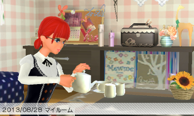
モンハン４でもジルパちゃんという名前でやってるが、それはガルモのアバター (↑)を受けてのこと。モンハン４というゲームはなぜか今どきのゲームなのにキャラクタークリエイトが充実してなくって、「ジルパちゃんが(逞しく)成長した姿」(↓2MB越え画像なので外部リンク)みたいにしかできなかった。しかも、ガルモと違って画面を保存できないため、デジカメで下手に撮影した画像を GIMP で遠近法＆拡大縮小で 3DS サイズにしたやつの紹介になる。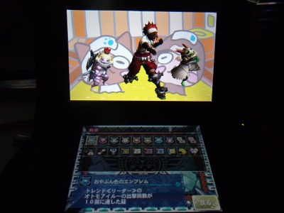
■ガルモのジルパちゃん アバターの姿はもちろん私とは全々関係がない。本人の似姿と誤解されないよう、外人っぽいというかアニメっぽいというか、そういう感じにワザとしている。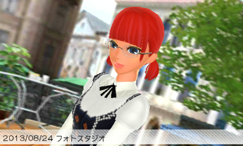
アバターは、髪型や髪の色は↑を基本としてできるだけ変えないようにしている。メイクは、面倒というのもあるし、メイクの理屈がわからないというのもあってあまり変えてない。眼鏡は付けたり外したり。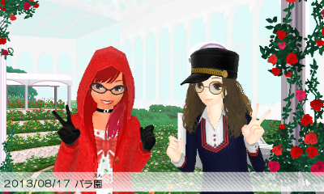
ゲームではお客さんが店に訪れて、要望に沿った「コーデ」すなわちコーディネイトをする。アバターのファッションや店の雰囲気で客層が変わったり、お客さんが店の外に誘って↑みたいな記念撮影のイベントが起きたりする。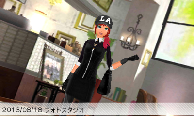
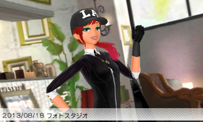
服とかのアイテムは一度仕入れた分は、アバターに着せることができる。でも、店に仕入れられる数は上限があって、ゲームが進むとどんどん増えてはいくけど、この制限が結構苦しい。いちおう、ネット要素にダウンロードでアイテム配信(今のところ無料)とかあるんだけど、発売してから１年たったけど、なんでかあんまり配信されなかったみたい。上の写真の帽子は確か、ダウンロードコンテンツ。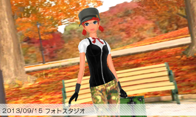
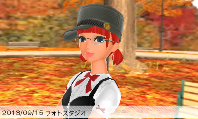
ネット要素にはあと、ネットショップの開店というのがあって、ネット上の店に３種のコーデを陳列できる。それを他の人が買ったり「いいね！」を付けることができる。↑は、一度ネットショップで並べてたコーデ。ただ、ネットでの陳列に使うマネキンはゲーム上で使うマネキンよりも自由度が低かったり、何かと「あとちょっと」な感じがある。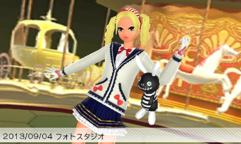
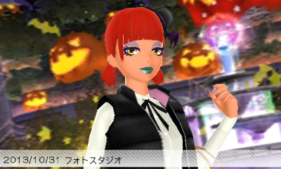
すれ違い通信では、プロフカードの交換がある。2013年のハロウィンでは、ネットショップでは『セーラームーン』風のカードを飾って、街では『ときめきトゥナイト』を意識した80年代ドラキュラ風のカードにしてすれ違ってきたりした。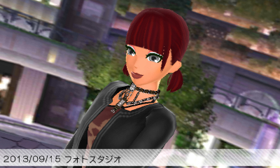
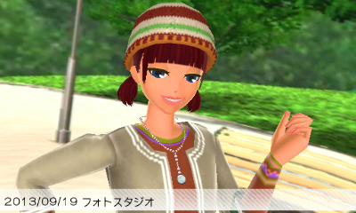
ファッションは、これまで着せ換え系でやってきたからか、美感みたいなものだけでなんとかやってるんだけど、メイクとなるとトンとわからない。ブラック系エスニックとかやりたくて、大人びたファッションに挑戦したりもしたんだけど、↑が私の限界。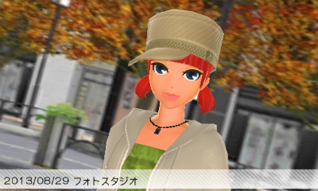
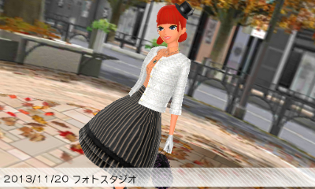
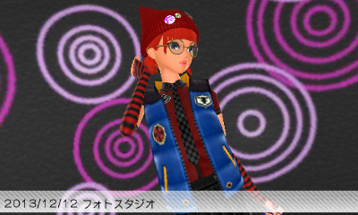
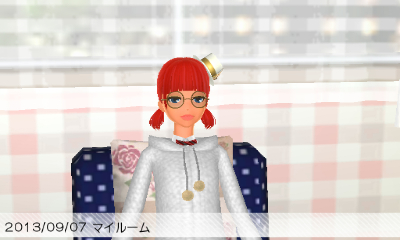
今は、やっぱ「私の娘」的にカワイイ系にして出歩くことが多い。 ■モンハン４のジルパちゃん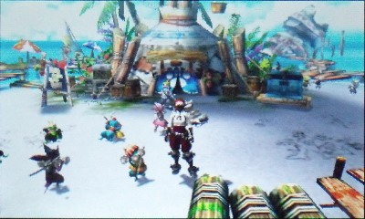
↑はポカポカ島に立つモンハン４のアバター。ギルドカード(ギルカ)はヘビィボウガンの装備になることが多いのは、最大調合数のスキルを持ってるのがガンナーで、セーブして終了する前に調合作業することが多くて、そのまま…って感じかな。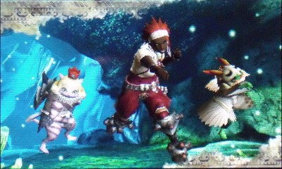
背景は「地下洞窟」がお気に入り。最初のころから使えて、その後、他のが使えるようになっても、結局ここに戻ってきたって感じ。いっしょに写ってるのはメインオトモの「きすけ」くんと、サブオトモの「モカ」ちゃん。今、持ってるヘビィボウガンは、グラン＝ダオラ。調合しまくりの通常２＆貫通１運用。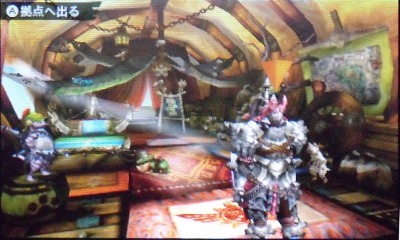
本職はチャージアックス使い。ガチプレイ用装備は↑みたいになる。せっかくの女キャラなのに性能面重視で、色気出せないのがくやしい。頭をグラビドSにすることもあるけど、顔は出るけどさらにバランス悪くなって悲しいので、撮影はしない。ギルカにもできるだけ設定しない…ってのが、ギルカがガンナー装備になるもう一つの理由。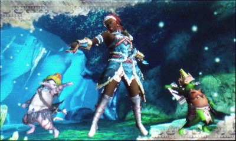
カニ頭だけど鷲羽ちゃんじゃないよ。偶然だけど、我が町のゆるキャラのイメージに重なって申し訳ない。雅歌1:5じゃないけど私は黒い子の愛らしいのも好きなんだけど、(日本だと)女性は清潔さが目立つ色白がいいとされがちなのに黒い子プッシュしてるのが、我が町の「昔話」と合わせるとイヤな感じもある。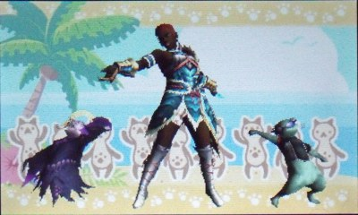
早い段階でライトボウガンで「指揮」スキルを付けようとしたらこういう装備になった。ただ、そのころは、カニ頭じゃなくこの短髪のほうがカッコいいんでこうしてた。はじめカニ頭→短髪→カニ頭と髪型を変えてる。色は赤、『ストリートファイター４』のヴァイパーといっしょなのは私の中では偶然。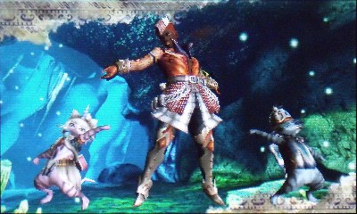
短髪は上位に入って↑みたいな装備にしたとき短髪のほうが似合ったということもある。で、シャガルマガラとかジンオウガ亜種とかで詰まって一時、ライトボウガンに逃げた。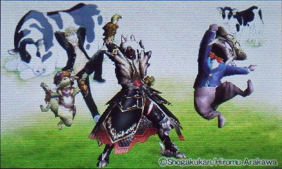
このゲーム『銀の匙』のイベントクエストがグッジョブで、その感謝を込めて同じサンデー系の『犬夜叉』をオマージュした↑ですれ違いしてたこともあった。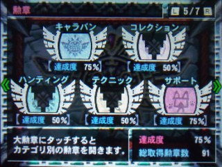
勲章は今、↑。キャラバンとサポートが埋まってるとあるけど、キャラバンのほうはまだぜんぜん。ソロが長いのでオトモ関連のほうが早く埋まっていって、サポートの勲章が残りあと一つ。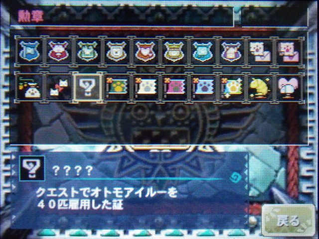
ゴメンねぇ。長い時間かけた人ほどヘイト値たまるようなマネして。でも、長い時間やってりゃモンハンってこういうゲームだってことも納得の上だもんね。(^^; 更新：2014-02-10 初公開：2014年02月10日 03:17:12 最新版：2014年02月10日 03:17:12
Links: モンスターハンター４: http://www.capcom.co.jp/monsterhunter/4/ (hbm) わがままファッション GIRLS MODE よくばり宣言！: http://www.nintendo.co.jp/3ds/aclj/ (hbm) モンハン４の近況: http://jrf.cocolog-nifty.com/statuses/2013/11/post-731b.html (hbm) ひとこと: http://jrf.cocolog-nifty.com/statuses/ オトモアイルーより親愛の手紙: http://jrf.cocolog-nifty.com/statuses/2013/12/post-9497.html 壁紙化：「haco. vol.36」: http://jrf.cocolog-nifty.com/column/2014/01/post-3.html 鷲羽ちゃん: http://www.geneonuniversal.jp/rondorobe/anime/blu-ray/tenchi/index.html (hbm)
後方参照 (3 件)
- URL参照 言わゆるバ美肉(バーチャル美少女として受肉する)をはじめた。名前はジルパちゃん。… 2022年12月10日
- URL参照 小ネタ集。いつもの与太話よりもさらに与太を飛ばしてきます。話半分、ゆるしてちょ。 2014年02月12日
- URL参照 私の「モンハン４の近況」まとめ。 2013年11月26日